Removing and Installing/Replacing Intermediate Levers
11 37 010 Removing and installing/replacing intermediate levers (N52K)
Special tools required:

IMPORTANT:
Aluminium magnesium materials.
No steel screws/bolts may be used due to the threat of electrochemical corrosion.
A magnesium crankcase requires aluminium screws/bolts exclusively.
Aluminium screws/bolts must be replaced each time they are released.
Aluminium screws/bolts are permitted with and without colour coding (blue).
For reliable identification:
Aluminium screws/bolts are not magnetic.
Jointing torque and angle of rotation must be observed without fail (risk of damage).

NOTE: There are 2 different versions of the gate
IMPORTANT:
Establish size of gates.
Version 1
Size 55.2 mm
Version 2
Size 58 mm
The description of version 2 starts on page 8.
Version 1
Size (1) 55.2 mm

Necessary preliminary tasks:
- Remove cylinder head cover
- For E81, E82, E87, E88, E90, E91, E92, E93:
Remove cowl panel cover

If necessary, move eccentric shaft (1) on mounting flats to minimum lift (2).

NOTE: Oil spray nozzle must be removed from 3rd cylinder (make a note of installation position of oil spray nozzle).
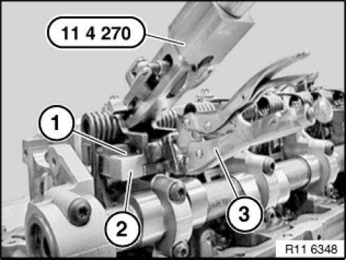
NOTE: Oil spray nozzle must be removed from 3rd cylinder (make a note of installation position of oil spray nozzle).
Secure special tool 11 4 270 to gate (2) using locking pliers (3).
IMPORTANT:
Special tool 11 4 270 is only secured to gate (2).
The position of the locking pliers (3) on the special tool 11 4 270 must not be altered. Risk of damage.

WARNING: Risk of injury in event of incorrect use.
IMPORTANT: Improper handling. Risk of damage.
Secure both bearing journals (2) in torsion springs with knurled screw (1) of special tool 11 4 270.
Press special tool 11 4 270 to stop in direction of arrow.
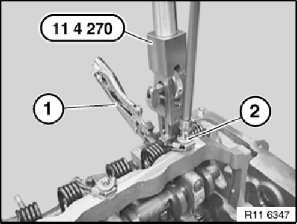
Release screw (2) of torsion spring.
Tightening torque 11 37 2AZ.
To avoid misalignment of screw (2) with torsion spring, it is necessary when releasing screw (2) to relieve the preload on the special tool 11 4 270 evenly.
IMPORTANT: Thread on cylinder head. Risk of damage.
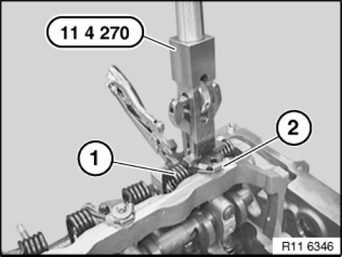
Release tension on torsion spring (1) with special tool 11 4 270.
NOTE: Sheet metal tab (2) can not be disassembled and must not be removed.
Installation note:
Replace torsion spring (1) if sheet metal tab (2) is faulty.
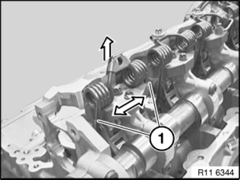
Press torsion spring apart at positions (1).
Remove torsion spring towards top.
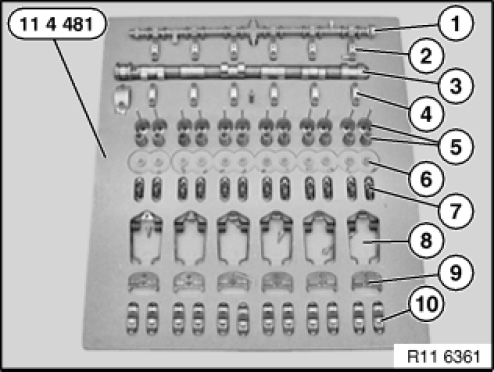
IMPORTANT:
Uniform distribution must not be changed.
Place all components in clean and orderly condition in special tool 11 4 481.
All components must be reinstalled in the same positions in an engine which has already been in use.
1 Eccentric shaft with bearing
2 Bearing caps of eccentric shaft (set out in order)
3 Intake camshaft
4 Bearing caps of intake camshaft (set out in order)
5 Intake valves with valve springs
6 Valve heads and valve keys
7 Rocker arms with HVCA elements (set out in order)
8 Torsion springs
9 Gates (set out in order)
10 Intermediate levers (set out in order)
Release screws (1) on gate (2).
Tightening torque 11 37 1AZ.
Place all gates (2) in neat order in special tool 11 4 481.
Installation note:
Mixing up the gates (2) will cause the engine to suffer idle-speed fluctuations.
This will result in maladjustment of uniform distribution.

Installation note:
All contact surfaces (1) of gates must be clean and free from oil and grease. If necessary, clean contact surfaces (1).

Lift out intermediate levers (2).
Place all intermediate levers (2) in neat order in special tool 11 4 481.
Installation note:
Mixing up the intermediate levers (2) will cause the engine to suffer idle-speed fluctuations.
Installation note:
All contact surfaces (1) must be clean and free from oil and grease. If necessary, clean contact surfaces (1).

All intermediate levers (1) are classified.
All intermediate levers (1) must be reinstalled in the same positions in an engine which has already been in use.

IMPORTANT:
Before installing intermediate levers (2), make sure rocker arms are correctly positioned.
Risk of damage.
Install intermediate levers (2).

Fit gate (2) cleanly into recess.
Tighten screws (1) hand-tight.
Check that intermediate levers are in correct installation position.
Release screws (1) by a 1/4 turn.
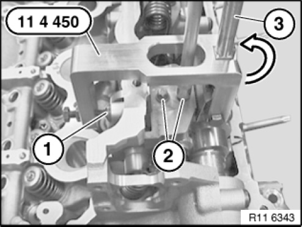
Secure special tool 11 4 450 to screw connection (1) of eccentric shaft.
Move eccentric lever (3) on special tool 11 4 450 in direction of arrow.
Gate is now preloaded.
Insert screws (2) of gates.
Tightening torque 11 37 1AZ.
Installation note:
At cylinder no. 3, the gate can be pre-installed with one screw (internal) only.
Oil spray nozzle is fitted only after torsion spring has been installed.

Install torsion spring (2) on gate.
Installation note:
Insert torsion spring (2) in intermediate lever (1) (see arrow).
Check that rocker arm (3) is in correct installation position.

Secure special tool 11 4 270 to gate (2) using locking pliers (3).
IMPORTANT:
Special tool 11 4 270 is only secured to gate (2).
The position of the locking pliers (3) on the special tool 11 4 270 must not be altered.
Risk of damage.
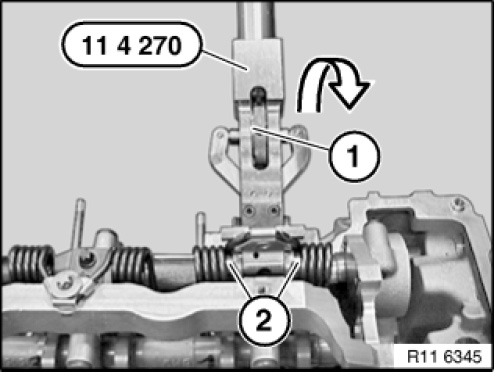
WARNING: Risk of injury in event of incorrect use.
IMPORTANT: Improper handling. Risk of damage.
Secure both bearing journals (2) in torsion springs with knurled screw (1) of special tool 11 4 270.
IMPORTANT: Check torsion spring on intermediate lever to ensure correct installation position.
Press special tool 11 4 270 to stop in direction of arrow.
Insert screw (2) of torsion spring.
Tightening torque 11 37 2AZ.
To avoid misalignment of screw (2) with torsion spring, it is necessary when inserting screw (2) to increase preload on special tool 11 4 270 evenly.
IMPORTANT: Thread on cylinder head. Risk of damage.
Remove special tool 11 4 270.
At cylinder no. 3, adjust oil spray nozzle (2) so that oil spray points precisely towards gearing (3).
Insert screw (1) with oil spray nozzle (2) (external).
Tightening torque 11 37 4AZ.
Assemble engine.
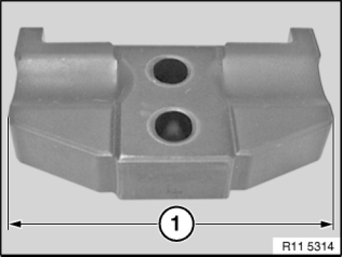
Version 2
Size (1) 58 mm
Necessary preliminary tasks:
- Remove cylinder head cover
- For E81, E82, E87, E88, E90, E91, E92, E93:
Remove cowl panel cover
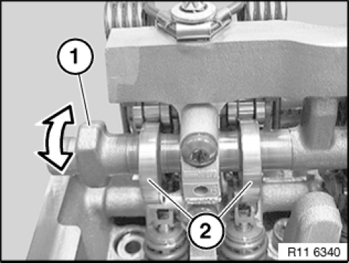
If necessary, move eccentric shaft (1) on mounting flats to minimum lift (2).
NOTE: Oil spray nozzle must be removed from 3rd cylinder (make a note of installation position of oil spray nozzle).
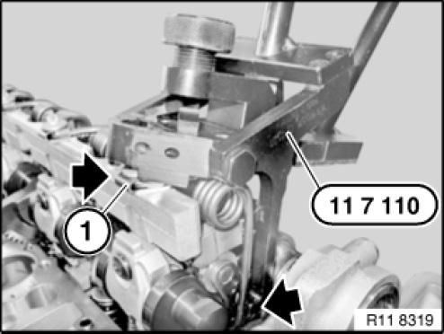
Position special tool 11 7 110 on return spring (1) (see arrows).
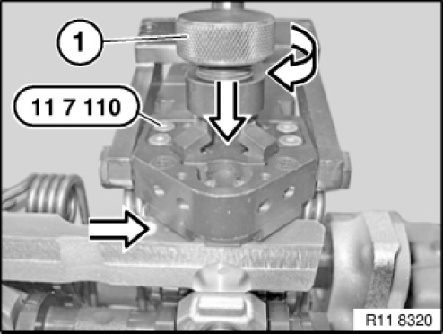
WARNING: Risk of injury in event of incorrect use.
IMPORTANT: Improper handling. Risk of damage.
Place special tool 11 7 110 flat on cylinder head.
Turn knurled screw (1) in direction of arrow until both clamping levers secure return spring in gate.
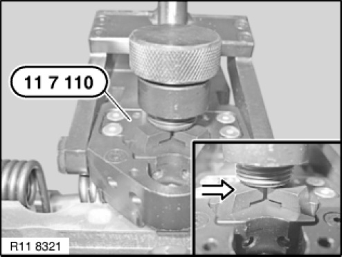
Return spring is correctly preloaded when both clamping levers are parallel to guide block.
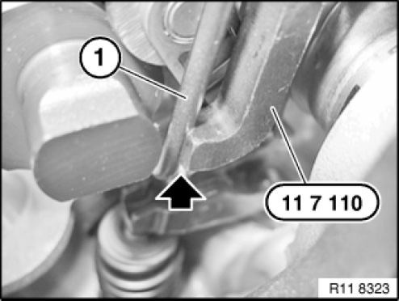
IMPORTANT: Risk of damage.
Left and right return springs (1) must be positioned in lateral guide of special tool 11 7 110.
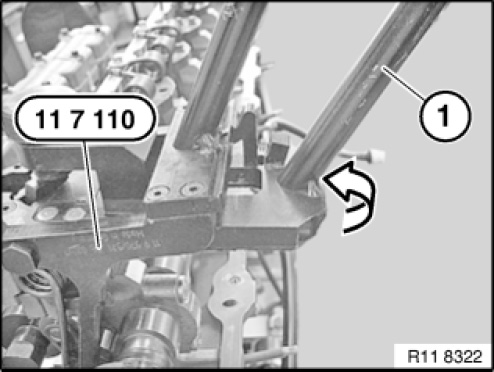
Preload return spring with lever (1) on special tool 11 7 110 in direction of arrow.
Lock special tool 11 7 110 with catch on lever (1).
IMPORTANT: Screw connection on return spring can only be released with special tool 11 7 110 secured.

Release screw (1).
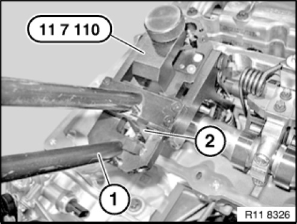
WARNING:
Risk of injury in event of incorrect use.
Lever (1) is preloaded.
Important:
Improper handling.
Risk of damage.
Secure lever (1)
Press back latching hook (2).
Return spring tension can now be released.
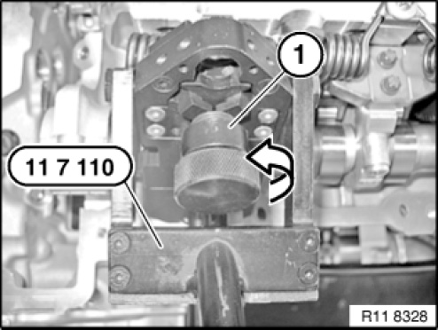
Release knurled screw (1) on special tool 11 7 110 in direction of arrow.
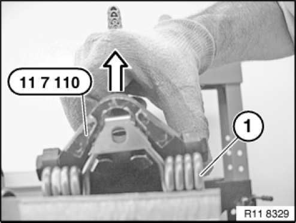
Release special tool 11 7 110 in direction of arrow from return spring (1).

Press torsion spring apart at positions (1).
Remove torsion spring towards top.

IMPORTANT:
Uniform distribution must not be changed.
Place all components in clean and orderly condition in special tool 11 4 481.
All components must be reinstalled in the same positions in an engine which has already been in use.
1 Eccentric shaft with bearing
2 Bearing caps of eccentric shaft (set out in order)
3 Intake camshaft
4 Bearing caps of intake camshaft (set out in order)
5 Intake valves with valve springs
6 Valve heads and valve keys
7 Rocker arms with HVCA elements (set out in order)
8 Torsion springs
9 Gates (set out in order)
10 Intermediate levers (set out in order)
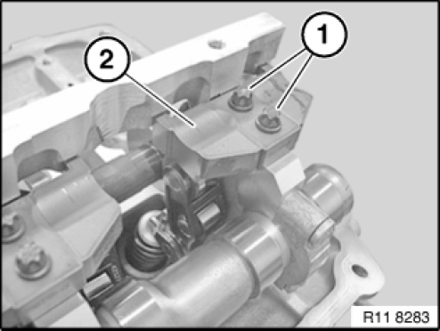
Release screws (1) on gate (2).
Tightening torque 11 37 1AZ.
Place all gates (2) in neat order in special tool 11 4 481.
Installation note:
Mixing up the gates (2) will cause the engine to suffer idle-speed fluctuations.
This will result in maladjustment of uniform distribution.
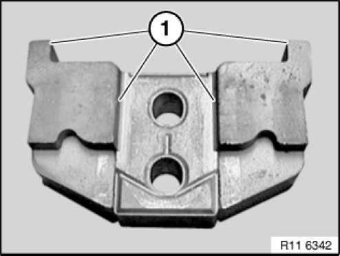
Installation note:
All contact surfaces (1) of gates must be clean and free from oil and grease. If necessary, clean contact surfaces (1).
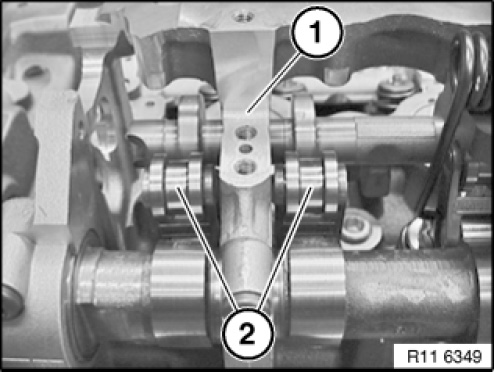
Lift out intermediate levers (2).
Place all intermediate levers (2) in neat order in special tool 11 4 481.
Installation note:
Mixing up the intermediate levers (2) will cause the engine to suffer idle-speed fluctuations.
Installation note:
All contact surfaces (1) must be clean and free from oil and grease. If necessary, clean contact surfaces (1).
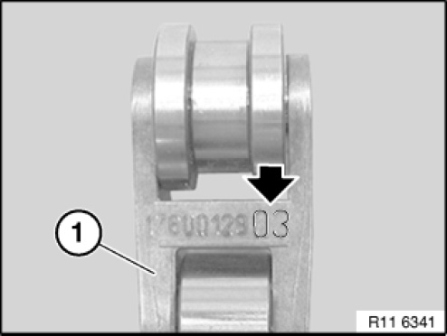
All intermediate levers (1) are classified.
All intermediate levers (1) must be reinstalled in the same positions in an engine which has already been in use.
IMPORTANT:
Before installing intermediate levers (2), make sure rocker arms are correctly positioned.
Risk of damage.
Install intermediate levers (2).
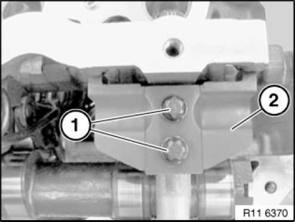
Fit gate (2) cleanly into recess.
Tighten screws (1) hand-tight.
Check that intermediate levers are in correct installation position.
Release screws (1) by a 1/4 turn.

Secure special tool 11 4 450 to screw connection (1) of eccentric shaft.
Move eccentric lever (3) on special tool 11 4 450 in direction of arrow.
Gate is now preloaded.
Insert screws (2) of gates.
Tightening torque 11 37 1AZ.
Installation note:
At cylinder no. 3, the gate can be pre-installed with one screw (internal) only.
Oil spray nozzle is fitted only after torsion spring has been installed.
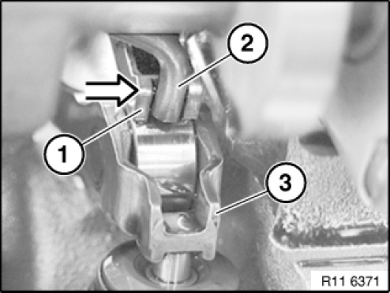
Install torsion spring (2) on gate.
Installation note:
Insert torsion spring (2) in intermediate lever (1) (see arrow).
Check that rocker arm (3) is in correct installation position.

Position special tool 11 7 110 on return spring.
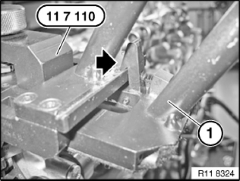
Clamp return spring with knurled screw (1) in direction of arrow.
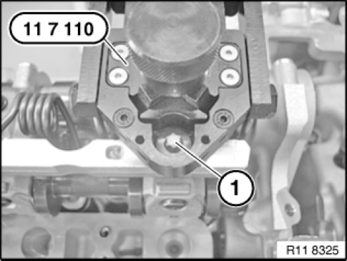
Return spring (1) is positioned correctly when catches (see arrows) are surrounding return spring (1).

WARNING: Risk of injury in event of incorrect use.
IMPORTANT:
Improper handling.
Risk of damage.
Check return spring on intermediate lever to ensure correct installation position.
Press special tool 11 7 110 to stop in direction of arrow.
IMPORTANT:
Pay attention to thread on cylinder head.
Risk of damage.
Tighten bolt (1).
Tightening torque 11 37 2AZ.
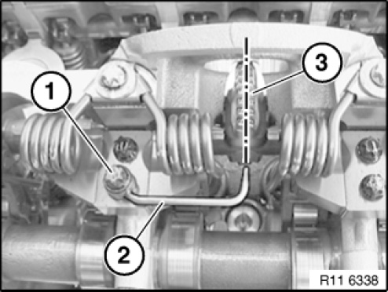
At cylinder no. 3, adjust oil spray nozzle (2) so that oil spray points precisely towards gearing (3).
Insert screw (1) with oil spray nozzle (2) (external).
Tightening torque 11 37 4AZ.
Assemble engine.
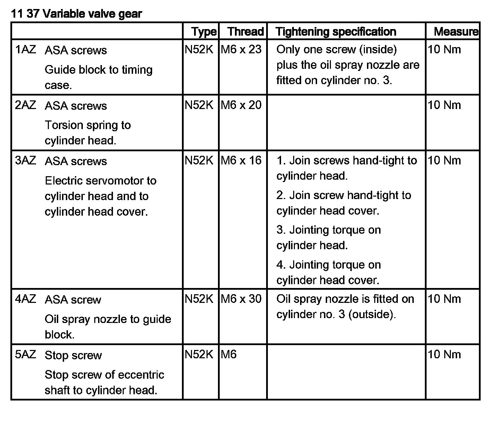